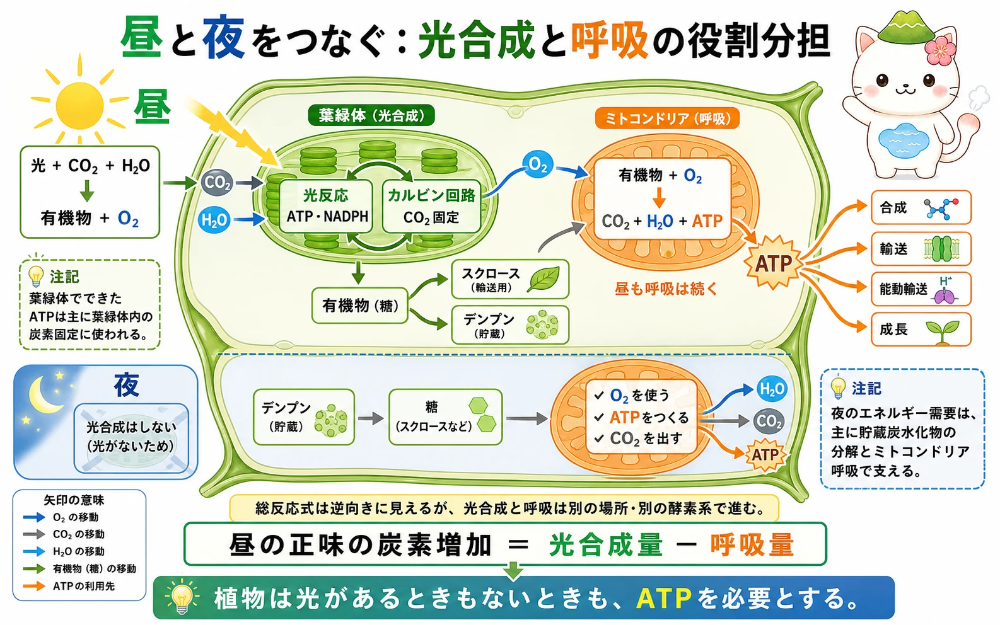

呼吸は何をしている過程か
細胞呼吸は、有機物を段階的に酸化し、そのとき取り出したエネルギーでATPをつくる過程です。糖を急に燃やすのではなく、電子を少しずつ受け渡しします。電子はいったんNADHやFADH2に受け取られ、最後にミトコンドリア内膜の電子伝達系で使われます。
ATPは、物質の合成、細胞内外への輸送、能動輸送、細胞分裂や伸長など、多くの仕事に使われます。植物に葉緑体があっても、呼吸が不要になるわけではありません。光のない組織や夜間はもちろん、明るい葉でもミトコンドリアは呼吸を続けます。
解糖系からクエン酸回路まで
最初の解糖系は細胞質基質で進みます。1分子のグルコースは2分子のピルビン酸へ分けられ、この段階で少量のATPとNADHが得られます。解糖系は酸素を直接使いませんが、後の反応が続くためにはNAD+の再生が必要です。
酸素が利用できる条件では、ピルビン酸はミトコンドリア基質へ運ばれ、アセチルCoAになります。このときCO2が放出され、NADHが生じます。アセチルCoAはクエン酸回路に入り、炭素骨格はさらにCO2へ、電子はNADHとFADH2へ受け渡されます。ここで得られる重要な成果は、ATPそのものよりも、内膜へ電子を運ぶ還元型補酵素です。


「呼吸＝酸素を吸うこと」だけではないよ。細胞の中では、有機物から電子を取り出し、その電子の流れを使ってATPをつくるところまでが大切なんだ。
電子伝達系と化学浸透
ミトコンドリアの内膜には、電子伝達系のタンパク質が並んでいます。NADHやFADH2が渡した電子が内膜上を流れるとき、そのエネルギーでH+が基質側から膜間腔へくみ出されます。こうして内膜をはさんだH+勾配ができます。
H+がATP合成酵素を通って基質へ戻ると、ADPとリン酸からATPがつくられます。これも化学浸透です。電子の最終受容体はO2で、電子とH+を受け取って水になります。O2がなければ電子伝達系が滞り、NAD+やFADを十分に再生できず、呼吸全体が続きにくくなります。
昼夜を通じた光合成との役割分担
昼、葉緑体は光反応でATPとNADPHをつくり、主に葉緑体内のCO2固定に使います。一方、カルビン回路でつくられた有機物は、スクロースとして運ばれたり、デンプンとして葉に蓄えられたりします。ミトコンドリアは、昼も有機物とO2からATPをつくり続け、合成・輸送・能動輸送・成長に必要なエネルギーを支えます。
夜は光反応とCO2固定が止まりますが、植物の活動まで止まるわけではありません。葉ではデンプンが糖へ分解され、ミトコンドリア呼吸の基質になります。呼吸でつくられたATPが、夜間の維持、物質輸送、成長などに使われます。昼の正味の炭素増加は、光合成量から呼吸量を引いたものです。

酸素が不足するとき
冠水した土壌の根などでは、O2が不足することがあります。このとき電子伝達系を十分に使えないため、植物細胞は解糖系で生じたNADHを酸化してNAD+を再生する発酵へ比重を移します。多くの植物ではピルビン酸からエタノールとCO2を生じる経路が働きます。
発酵は解糖系を続ける助けになりますが、得られるATPは少量です。長く酸素不足が続くとエネルギー不足になり、根の機能や生育に影響します。通気組織を発達させるなど、酸素不足への適応は植物によって異なります。
葉緑体もミトコンドリアもH+勾配を使ってATPをつくるよ。でも、葉緑体のATPは主に炭素固定に、ミトコンドリアのATPは細胞全体の仕事に、と役割を分けて考えるとわかりやすいんだ。
この冊子の要点
- 細胞呼吸は、有機物を段階的に酸化してATPをつくる過程です。
- 解糖系は細胞質基質、ピルビン酸の酸化とクエン酸回路はミトコンドリア基質、電子伝達系は内膜で進みます。
- 電子伝達系はH+勾配をつくり、ATP合成酵素がその勾配を使ってATPをつくります。O2は最終電子受容体です。
- 植物は昼も夜も呼吸します。酸素が不足すると発酵でNAD+を再生できますが、ATPの得方は限られます。
参照資料
- OpenStax Biology 2e：Glycolysis
- OpenStax Biology 2e：Oxidation of Pyruvate and the Citric Acid Cycle
- OpenStax Biology 2e：Oxidative Phosphorylation
- Taiz et al., Plant Physiology and Development, Oxford University Press.